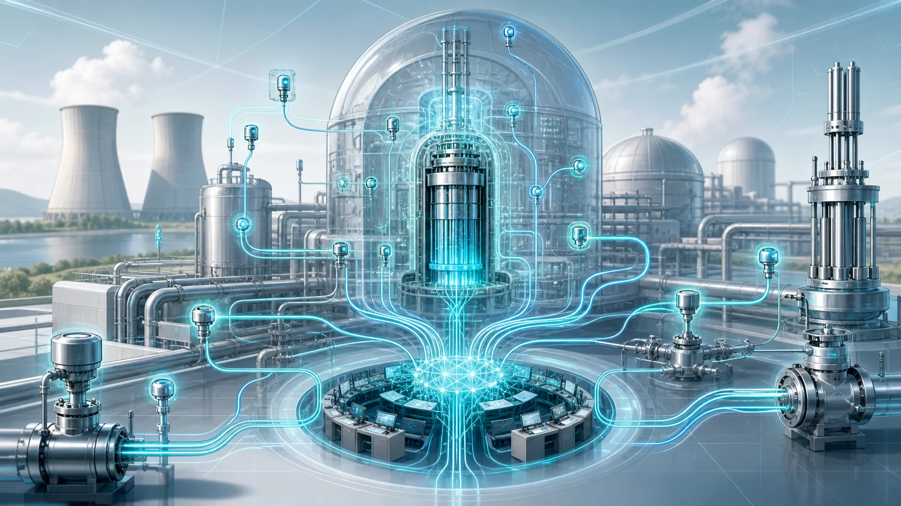
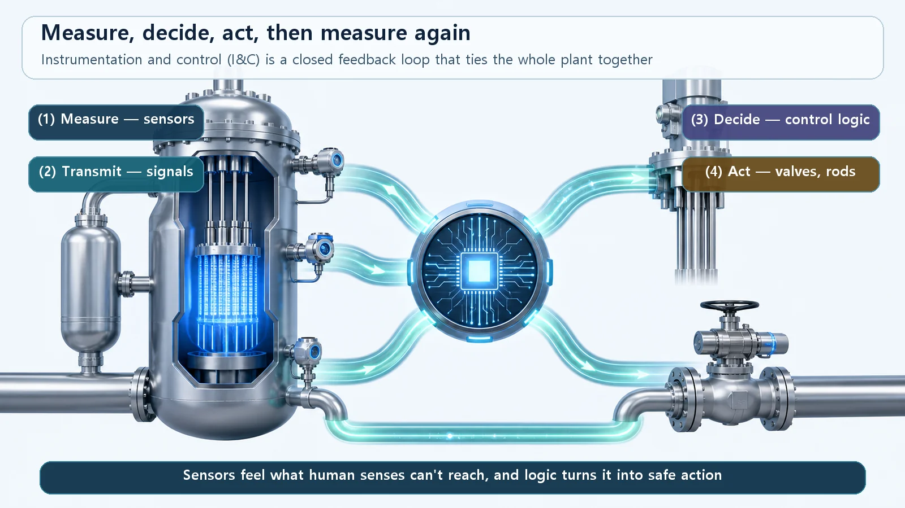
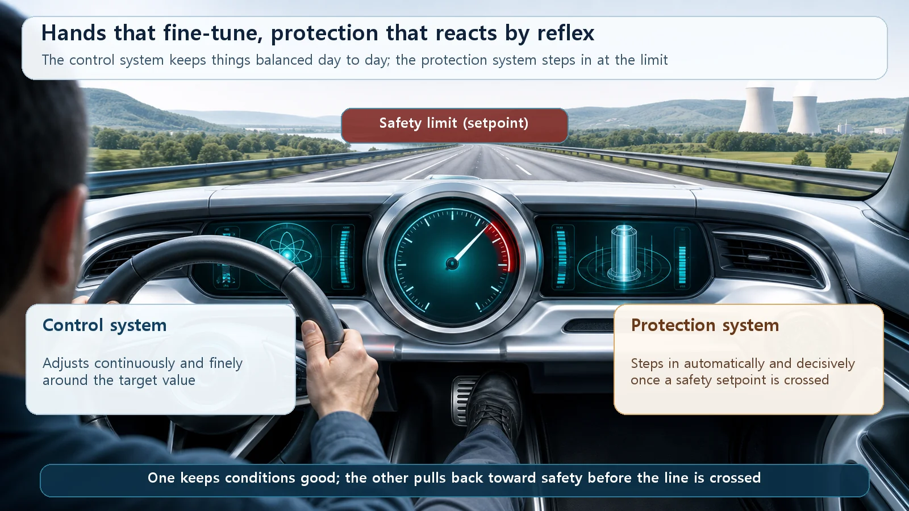

Reactor Types & Plant Systems · 197
A Reactor Can't Cry Out in Pain — So Instrumentation and Control (I&C) Feels and Reacts for It
Like your nervous system pulling your hand off a hot pot, I&C senses the plant's condition, decides and acts, continuously and automatically.

Instrumentation and control (I&C) is a nuclear plant's sense organs and nervous system: sensors measure what people cannot see or touch, and control logic moves valves, pumps and control rods in response, in a loop that never stops. Inside it, a control system fine-tunes conditions continuously, while a separate, more independent protection system acts like a reflex, shutting the reactor down or starting safety equipment the moment a safety limit is crossed.
You've probably done this. You grab a pot handle without realizing it's hot, and your hand jerks away before the thought "Ouch, hot!" even forms. Your skin sensed the heat, the signal raced along a nerve, and your spinal cord fired back a reflex: "Pull!" The brain only catches up ("huh, that was hot") after your hand is already free.
A remarkable thing happened in that instant: sense (measure) → transmit (signal) → decide (reflex) → move (act). Your body runs those four steps in the blink of an eye. One system in a nuclear power plant does exactly this job for the plant's enormous "body." It's called instrumentation and control, or I&C.
A reactor won't tell you how it's feeling
Why is this needed? When we're unwell, we feel it. A reactor doesn't tell anyone what state it's in.
Nor can people look inside. The middle of the core is extremely hot, under high pressure and radioactive; you couldn't put a hand in, let alone see. And across the whole plant there are thousands upon thousands of pipes and components, far too many for human senses to know what is going on everywhere.
That's where I&C comes in. I&C stands for Instrumentation and Control: "instrumentation" means measurement, and "control" means control. Spelled out, sensors are planted like sense organs in every corner of the plant that human senses can't reach, feeling its condition on our behalf (instrumentation), and equipment is moved in response to those readings (control). In short, I&C is the plant's sense organs and nervous system.
Measure, decide, act, measure again — a loop that never stops
Drawn as a big picture, everything I&C does boils down to one simple loop:
Measure → compare with the target and decide → move the equipment → measure again.
These four steps go round and round without rest. Control engineers call it a "closed loop," or feedback loop. That sounds technical, but you probably have one at home: the thermostat. It measures the room temperature, compares it with the setting, switches the heating on if it's too low and off when the target is reached, then measures again. Nuclear I&C works on the same principle, only on an enormously larger and more precise scale.
A concrete example: the steam generator, which makes steam, needs its water kept at the right level, neither too low nor too high. So I&C measures that level continuously. If it drops below the target, the feedwater valve opens a little more; if it rises, the valve closes a little. Nobody turns the valve by hand; the loop holds the level by itself.

Two very different branches in one nervous system
Inside this nervous system are two branches with quite different personalities: the control system and the protection system. Both sense and react, but they react differently.
The control system keeps things in good shape day to day. When power, pressure, water level or temperature drift even slightly from target, it nudges them back gently, a little at a time. In kitchen terms, it's like turning the heat down a touch so the soup doesn't boil over, or adding a pinch more salt: conscious, continuous balancing with your fingertips. Smooth and fine.
The protection system, by contrast, steps in decisively the moment a line is crossed. If a value exceeds a preset safety limit, it doesn't deliberate. It immediately shuts the reactor down (an automatic shutdown, usually called a "trip") or starts safety equipment. That's the reflex from the start of this article. Just as your spinal cord pulls your hand off a hot pot without waiting for the brain, the protection system doesn't leisurely weigh whether things are fine; it returns the plant to the safe side at once.
Why does the difference matter? Even if the control system slips briefly and a value strays outside its normal range, the protection system's reflex stands behind it. That's why the protection system is built to be far more independent than the control system, and in several overlapping copies (redundancy). The reflex must never be missed. (Specific trip setpoints, redundancy and voting arrangements, and response times depend on the reactor type, design and regulatory requirements, so this article describes the concept without quoting values.)

Where this system stands in the plant
I&C spans two big areas.
One is operation. Operators in the control room can't see inside the reactor. Instead, the information I&C gathers from all over the plant appears on gauges and screens, and operators read it to monitor and run the plant. Without accurate instrumentation, they would be operating with their eyes closed.
The other is safety. Spotting trouble early and, if needed, triggering safety actions automatically without waiting for a human hand is what happens on the very front line of nuclear safety. In a safety design built in layers, I&C fastens the first button: detect and respond.
One misconception is worth clearing up: "If everything is automatic, do we even need people?" Yes, we do. Automatic control and protection take a lot of work off people's hands, but reading the overall situation, judging it and making the final decisions is still done by people. I&C is a tool that helps operators, not one that replaces them.
Things that look alike but aren't
I&C isn't only about control. The name invites that mistake, but measurement comes first. You can't control what you haven't measured. Measuring accurately and acting on the measurement are one package.
The control and protection systems live in the same I&C but do different jobs. One is continuous adjustment that keeps normal conditions in good shape; the other is a reflex that intervenes decisively at the line. Don't lump "fine-tuning" and "emergency reflex" into one word.
I&C sits at a different level from the electrical system that makes and carries power. I&C is a world of information and signals: measuring, deciding, issuing commands. It is connected to the electrical system that generates and transmits power, but the job itself is different.
One more thing: newer plants increasingly implement I&C with computer-based digital technology instead of the older analog circuits. Whether analog or digital, though, the big principle of sense, decide, act is the same.
Today's summary
- Instrumentation and control (I&C) measures the plant's condition with sensors and controls and protects equipment based on those readings: the plant's sense organs and nervous system.
- Its backbone is a closed feedback loop, measure → compare with target → act → measure again, the same principle as a home thermostat.
- It has two branches: a continuous control system that keeps normal conditions in good shape, and a reflex-like protection system that decisively returns the plant to safety the moment a line is crossed.
- Because it senses and reacts where human senses can't reach, I&C is basic infrastructure for both operation and safety, and automation helps operators rather than replacing them.
- Watch out for three mix-ups: "I&C = control only," confusing control with protection, and confusing I&C with the electrical system.